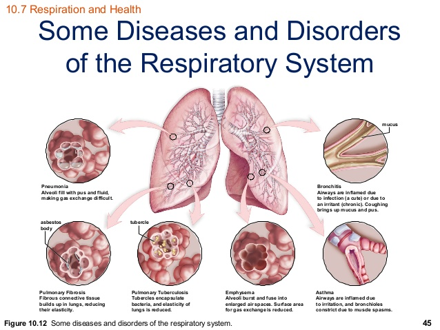
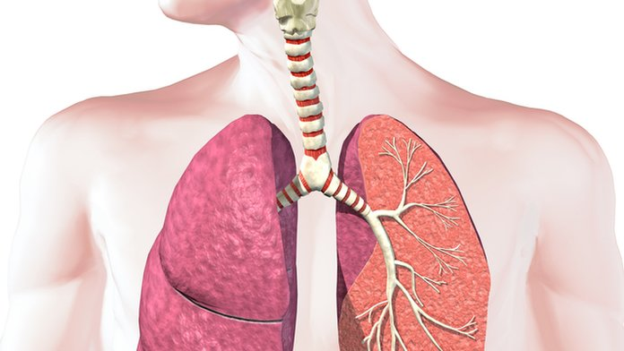
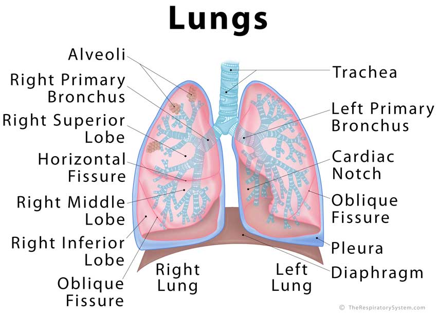

FCIH Hospital
Your Health Is Our Proiority
Doctors in the Department of Respiratory system diseases
Dr. Tarek Amara
Consultant Chest Diseases, Asthma, Thoracic & Occupational Allergy
Dr. Sadr and a respiratory system specialized in chest and respiratory system
work time
8 AM : 8 PM
from sunday to Thursday
01207161206
Respiratory system diseases
Respiratory disease is a medical term that encompasses pathological conditions affecting the organs and tissues that make gas exchange possible in higher organisms, and includes conditions of the upper respiratory tract, trachea, bronchi, bronchioles, alveoli, pleura and pleural cavity, and the nerves and muscles of breathing. Respiratory diseases range from mild and self-limiting, such as the common cold, to life-threatening entities like bacterial pneumonia, pulmonary embolism, acute asthma and lung cancer.[1] The study of respiratory disease is known as pulmonology. A doctor who specializes in respiratory disease is known as a pulmonologist, a chest medicine specialist, a respiratory medicine specialist, a respirologist or a thoracic medicine specialist. Respiratory diseases can be classified in many different ways, including by the organ or tissue involved, by the type and pattern of associated signs and symptoms, or by the cause of the disease
 Chronic respiratory disease Chronic respiratory diseases (CRDs) are diseases of the airways and other structures of the lung. They are characterized by a high inflammatory cell recruitment (neutrophil) and/or destructive cycle of infection, (e.g. mediated by Pseudomonas aeruginosa). Some of the most common are asthma, chronic obstructive pulmonary disease, and acute respiratory distress syndrome. CRDs are not curable; however, various forms of treatment that help dilate major air passages and improve shortness of breath can help control symptoms and increase the quality of life for people with the diseases.
Restrictive lung diseases
Restrictive lung diseases are a category of respiratory disease characterized by a loss of lung compliance,[3] causing incomplete lung expansion and increased lung stiffness, such as in infants with respiratory distress syndrome.
Respiratory tract infections
Infections can affect any part of the respiratory system. They are traditionally divided into upper respiratory tract infections and lower respiratory tract infections.
Upper respiratory tract infection
The most common upper respiratory tract infection is the common cold. However, infections of specific organs of the upper respiratory tract such as sinusitis, tonsillitis, otitis media, pharyngitis and laryngitis are also considered upper respiratory tract infections.
Lower respiratory tract infection
The most common lower respiratory tract infection is pneumonia, an infection of the lungs which is usually caused by bacteria, particularly Streptococcus pneumoniae in Western countries. Worldwide, tuberculosis is an important cause of pneumonia. Other pathogens such as viruses and fungi can cause pneumonia for example severe acute respiratory syndrome and pneumocystis pneumonia. A pneumonia may develop complications such as a lung abscess, a round cavity in the lung caused by the infection, or may spread to the pleural cavity.
Poor oral care may be a contributing factor to lower respiratory disease. New research suggests bacteria from gum disease travel through airways and into the lungs.
Malignant tumors
Malignant tumors of the respiratory system, particularly primary carcinomas of the lung, are a major health problem responsible for 15% of all cancer diagnoses and 30% of all cancer deaths. The majority of respiratory system cancers are attributable to smoking tobacco.
The major histological types of respiratory system cancer are:
Small cell lung cancer
Non-small cell lung cancer
Adenocarcinoma of the lung
Squamous cell carcinoma of the lung
Large cell lung carcinoma
Other lung cancers (carcinoid, Kaposi’s sarcoma, melanoma)
Lymphoma
Head and neck cancer
Pleural mesothelioma, almost always caused by exposure to asbestos dust.
In addition, since many cancers spread via the bloodstream and the entire cardiac output passes through the lungs, it is common for cancer metastases to occur within the lung. Breast cancer may invade directly through local spread, and through lymph node metastases. After metastasis to the liver, colon cancer frequently metastasizes to the lung. Prostate cancer, germ cell cancer and renal cell carcinoma may also metastasize to the lung.
Treatment of respiratory system cancer depends on the type of cancer. Surgical removal of part of a lung (lobectomy, segmentectomy, or wedge resection) or of an entire lung pneumonectomy), along with chemotherapy and radiotherapy, are all used. The chance of surviving lung cancer depends on the cancer stage at the time the cancer is diagnosed, and to some extent on the histology, and is only about 14-17% overall. In the case of metastases to the lung, treatment can occasionally be curative but only in certain, rare circumstances.
visit us on

Copyright ©2018 All Right Reserved to fcih Hospital ®Team